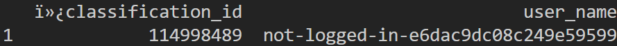
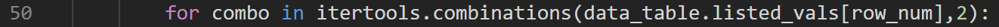
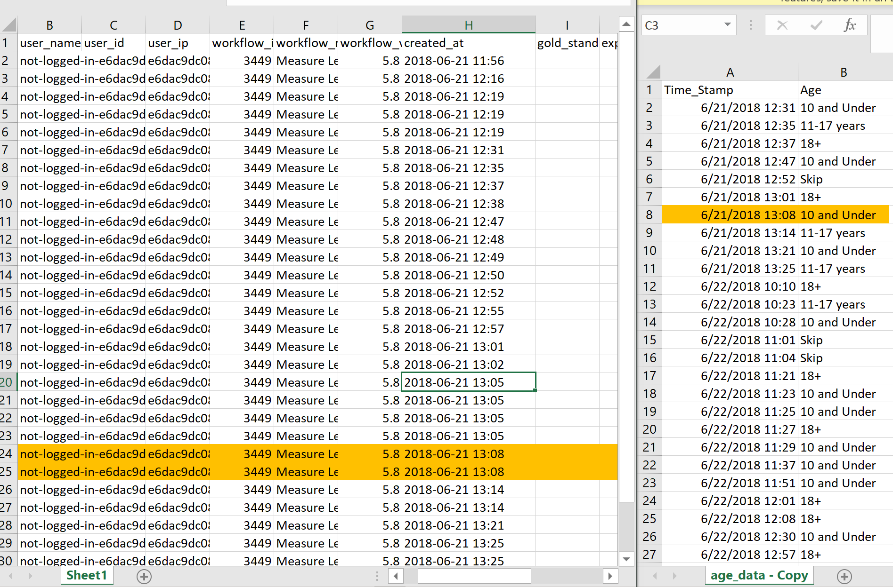
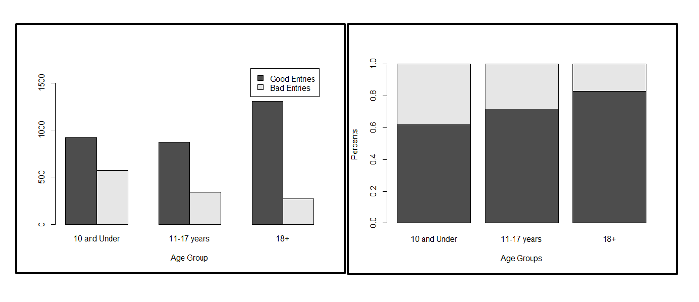
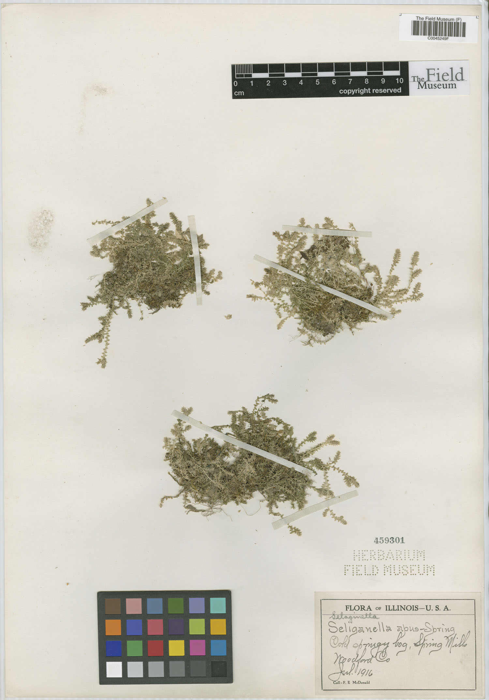
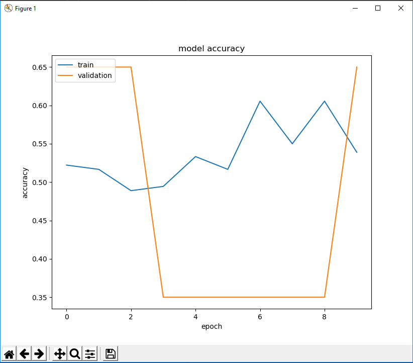
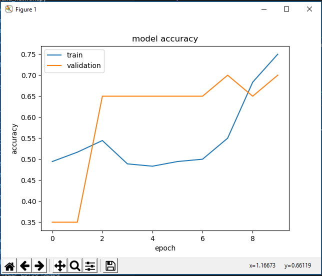
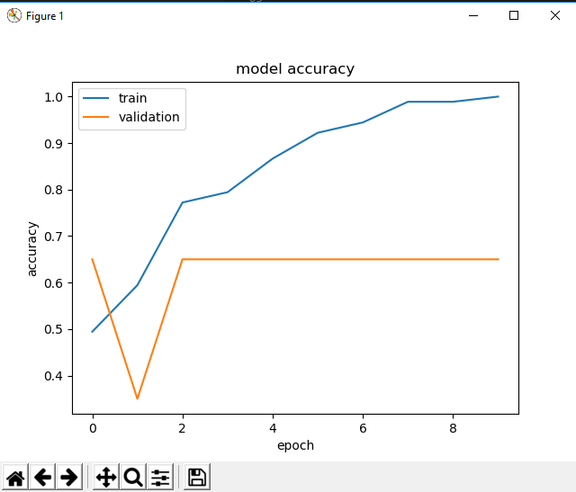
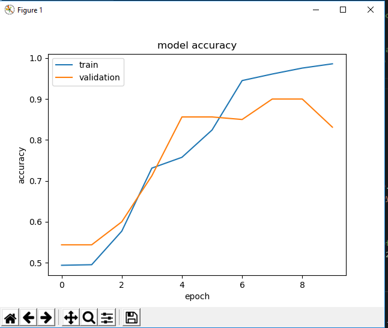
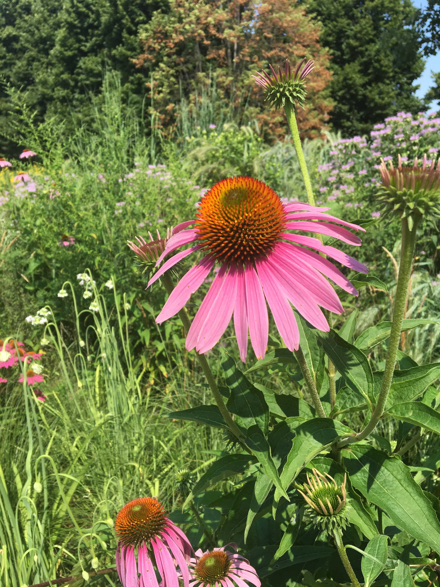

Welcome to my blog*!
*Creative Name Pending
I started this blog in the summer of 2019 to basically document the work that I do in my projects and just to have a place to share my thoughts! You can think of this as a sort of brain dump convey my thoughts, but just a heads up, I'm a terrible writer-there's a reason I chose engineering. Enjoy!
The Field Museum (The Sequel)
Sunday June 23, 2019
This past week I started my internship at the Field Museum in downtown Chicago. Two years ago, the summer after my junior year of high school, I did the Digital Learning Internship at the Field Museum where I collaborated with five other high school students to create a game, Seeds for Survival, in the museum's Plant Hall. This summer, I'll be working with Dr. Matt von Konrat and his team studying bryophytes in the Botany Department with some machine learning projects.
In this first week, I mostly helped reorganize the specimen collection. I've never seen so many different types of plants in one place ever, and honestly it's a bit overwhelming. Towards the end, I sat down with Matt and we talked about my project for the summer which is essentially broken down into three parts:
1. Data Analysis with Microplants
An ongoing project right now uses a Zooniverse project on microplants (really really small plants measured in microns (10e-6 meters)). The project can be done on a computer or a kiosk, and it gives the user a picture of part of a microplant under a microscope and the user uses their mouse or finger to measure out the length and width of the leaves. Although the task doesn't seem mind blowing, the project's advocacy of citizen science expedites the data collection process for scientists, and the data is then used to help determine speciation of various microplants. My role here will be to work with another undergraduate student to devise a way to convert the pixel measurements Zooniverse takes into microns and to create a Python script to clean the data to be usable.
2. Plant Measurements with Morphosnake
The second part of the project utilizes Morphosnake, a software for plant image analysis which takes in a skeletonized image of a plant then takes measurements of each branch, outputting the statistical summary. These measurements again will be used to distinguish various species that may be similar. The department has been struggling to get the software up and running, so that's step 1. After that, we want to look into having a script to automate to process of skeletonizing the images.
3. Machine Learning to Automate the Species Determination
The last part of the project is what I'm most excited for! There was a paper published from the Smithsonian that used a convolutional neural network (CNN) to classify two families of of specimen that look very similar to each other. We want to be able to accomplish this with our specimen collection at the Field Musuem, so the first step is almost trying to replicate the steps they took and then being able to apply a similar model on different family/specimen/etc. This will be a really good way for me to get some experience in machine learning and hopefully understand what's happening as well, not just mimicking the steps.
I'm genuinely really excited for this summer! I love the idea of applying computer science into a field that hasn't really been exposed to it yet and seeing how much of an impact technology will be able to make. In addition to working at the Field Museum, I'll also be collaborating with CS professors and graduate students from North Eastern Illinois University (NEIU) for guidance! (which we all know I'll need a lot of)
Till next time!
-Al
Week 1: Microplants Data Cleansing
Monday June 24, 2019
Today was the start of working on my project! Using the code from a fellow Field Museum employee, Victoria, that cleans some data to be usable, we will create a more thorough script that cleans data, converts measurements of pixels into microns, and pairs the raw data from kiosks with results of the age groups of the responders to make a connection between age and validity of data. (For example, if the measurements of the major and minor axes don't cross, go off screen, or intersect too far from perpendicular, the data is unusable.)
The issue that we have to firstly solve is that the measurements from the Microplants kiosk is just that: measurements with a time stamp in UTC along with serial IDs. The surveys of what age group made the measurements is on a different CSV and it's our task to match up the entries from the two sheets together. For clarity, I'll call the former measurement data and the latter age data. This doesn't sound too bad, but we found that the measurement data contains more entries than the age data; after looking at the first few entries in age data, we found corresponding entries in measurement data (by matching up the timestamps manually which was a whole other process) and our next step is to write a python script that will match up the rest of entries (about a thousand).
Briefly going back to the timestamp matching, the timestamp in the two sheets are presented in a format different from each other. For the current purposes, we manually edited them (using Excel's beautiful functions) so our script will be able to easily compare them and see if there are matches. In the future, we would like to have the script do this for us so a user would only need to press one button and everything would be done for them
Stay tuned for more updates!
-Al
Tuesday June 25, 2019
Today was spent adjusting the script from Victoria so that it would export a new sheet with the matches and with new columns that quantifies the data as useable or not and that specify the age demographic of that data reporter. This will allow us to see if there are any trends between certain age groups and the validity of the data they record.
A lot of the nitty gritty work was already implemented (such as syntax to create data frames using panda and reading CSV files), but we still ran into a few issues that may or may not be common; below I'll go through them.
First, our script wasn't recognizing the name of our first column when we imported the data frame as a CSV. When we printed out, the first row of the CSV, we would get some garbage characters in front of the first column (shown below).
We tried renaming the first column using various functions from the pandas package, but nothing work. After some research, we found the error was most likely caused by an encoding issue. The CSV we were reading in was encoded as UTF-8, but we had to make that clear to the compiler (because as we all learned in any intro CS class, computers are stupid and will only do exactly what you tell it to :D ). In order to clarify to the compiler that the CSV's are UTF-8, we added a little segment to the line that opens the file.
measurements_data = open(r'[path].csv', encoding='utf-8')
Our second main error dealt with the formatting of our age data in Excel. CSV's can be conveniently opened in Excel and edited, but in order to match our age data to entries of the measurement data, we wanted to timestamp to be of a certain format. However, Excel has a mind of its own and would rearrange our timestamps to the default when we would open the age data in Notepad then again in Excel. Lesson? Don't open in Excel! Or figure out a way to avoid the default date format first because this caused some issues that we didn't realize.
Additionally, from Victoria's code, we still had problems importing the python file that does the calculations, so for now, we copy pasted that code at the top of our current file and hardcoded the import of the age data. Once this is working, we want to make ALL of these variables so the user can simply upload the raw data for both the ages and measurements and the script will do the rest. Our current next steps will be exporting the data into a CSV and seeing how good (or unsuccessful) our script is!
Thanks for reading, see you next time!
-Al
P.S. The Field Museum just opened a temporary bug exhibit where staff got to see first today! Even if you don't like bugs (like me) it's definitely a very interesting and cool exhibit! I learned a lot and actually have an increased appreciation for the creepy crawlies on our Earth. Be sure to check it out!
Wednesday June 26, 2019
After I left yesterday, Jose continued working on our script and added a feature that exports our resultant data frame as a CSV file. From our first attempt, our output data can be found here. After a quick glance, we can see this output has over 200 lines of data and most of the entries are labeled as bad, which reasonably doesn't sounds right. After looking into it more, I realized the root of this issue was due to Jose and I not understanding how the function cleaned the data, specifically this line down here:
In short, listed_vals contains lists of the segments drawn. Then the code above creates any and all combinations of two segments from each data entry in the measurement data (which very well could contain more than 2 segments since there could be multiple lobes in one picture for the user to measure) to then perform the calculations on. Thus, our current code appends every combination of 2 segments from each picture onto our exported CSV, causing the CSV to be hundreds of lines long. To fix it, we moved the if statements around to only append data if the combination of 2 segments intersected.
Additionally, we found that while the age data had completely unique timestamps, the measurement data sometimes had two entries with the same timestamp (down to the minute). Although they varied by the second, since the age data's timestamps only included up to the nearest minute, we had to truncate the timestamps in measurement data. Thus sometimes we had one entry in age data potentially correspond with multiple entries in measurement data (based on the time stamps) as seen below:
We can assume that since the timestamps are very close together, that this data is probably from the same user and thus can use the age demographic entry for both the highlighted measurement entries. To reflect this in our code, we simply did not increment the row counter for the age data whenever we ran into two rows in measurement data that corresponded with the current row in age data.
We ended the day with a meeting at Northeastern Illinois University where I talked with Francisco, a professor in computer science, as well as Beth, a graduate student. Beth will be working with using machine learning to classify ferns (which is part of my third project of the summer) and I'll be shadowing her project to learn about machine learning, both theoretically and practically, as well as learn how to apply it for my own uses.
Happy hump day! We're over halfway through!
-Al
Thursday June 27, 2019
Today started off with debugging! (Yay... my favorite) When we last left off, the cleaning script worked with a snippet of data from the kiosk measurements, but when we used the CSV with measurement data that corresponded with the date range from the age data sheet, we kept getting a JSON error. I personally had no idea what a JSON error, but after reading through a few Github threads and analyzing the problem, everything pointed to it being an issue with our data file. But this file was over 1000 lines long...luckily, using Excel's CTRL + 'down key' we found a few blank rows. After removing them, the first issue of the day was solved and we were able to export the data for all of the measurements that matched with a timestamp on age data! Success!
But of course, we can't ride on our successes for long. Currently, if there is an entry in measurement data whose timestamp does not correspond with an entry from age data, it's ignored. But after talking with Matt we realized this was wrong. Here's why:
When people come up to use the kiosk, they're first asked what age group they are. That's where the time stamp for age data comes from. Then they're shown pictures of the microplants where they make the measurements. Maybe they just do measurements on one image, maybe they do it on ten. Recall that each time they change images, an entry in measurement data is made. Thus all these measurements are associated with that one age data time stamp. Then when the user is done, they hit 'Quit' which resets the kiosk, allowing the next person to repeat the entire process.
For now, we need to treat all the entries in measurement data that do not directly correspond to a timestamp in age data to correspond with the last occurring timestamp in age data. Although there will be cases where no one hit exit and an entry in measurement data will correspond with a timestamp that was perhaps a few hours ago, we need not worry about that yet. In the future, we will get to putting less weights on these entries, since they are less likely to actually be associated with the entry in age data. This change in the code is not difficult, but to do it most efficiently we decided not to change anything regarding the appending of the data frame, but changing how the algorithm loops through the data.
Thanks for reading!
-Al
Week 2: Microplants Data Cleansing & Starting MorphoSnake
Tuesday July 2, 2019
I was gone Friday and Monday, and during that time, Jose worked on making the timestamps from both data sets into time objects that we can directly compare to one another and writing a script to take the CSV for age data that we obtain from Google Analytics and converting it into a usable format. When I came in today, I worked on integrating that script into our overall cleansing script. So now, our code takes the raw data from Google Analytics and spits out the correct measurement and age pairing, allowing us to use this script, eliminating the need for someone to manually reformat the sheet how we want. Something to note, however when I tried to download the file straight from an email, the formatting was different and didn't work with the script. However, if I opened the file first in Google Sheets then downloaded as CSV, it worked perfectly fine.
Once that was working, I ran the script on both complete files (which took a good minute or two to fully run, making me feel like a true computer scientist when my code actually takes a bit of time to run) I skimmed through the output data and noticed that after line 900 or so, all the measurement data was being listed as having occurred past our cutoff. This cutoff was set at less than two minutes ( inclusive), which we decided because based on an observational study, the average time spent for people of all ages was around 90 seconds. It's also important to note that since our age data timestamps did NOT come with seconds, our data is only accurate down to the minute. However, although all these entries were being labeled as 'Out', most of them should've been 'In', meaning there was a bug in the code
Upon further inspection, I found that our algorithm did not handle the case when the age data contained an "extra" timestamp that didn't align closely with any of the measurement data. (In real people talk, this meant someone filled in their age group, but decided not to take any measurements). I fixed it with the following code where i is the row number in the age file and row_num is the row number of the raw measurement data from Zooniverse:

-Al
Wednesday July 3, 2019
Today we took a break from the Microplants project and moved onto MorphoSnake, so let me explain exactly what it is. MorphoSnake is a Python script that takes in a skeletonized image of a plant and outputs the measurements of individual branches and nodes (such as terminal nodes which are where the ends of the branches are and inner nodes which are where two branches come together) as well as means and standard deviations of the whole. This tool is extremely useful for measuring plants first because it's incredibly quick and second because it's incredibly precise, especially for plants on the scale of millimeters. To see for yourselves, check out the Github page here.
In the past, there was one intern who was able to get it running, but she wasn't able to leave any documentation, so once she left, Matt hasn't been able to get the software up and running. This morning, we Skyped with Catherine Reeb, one of the creators of MorphoSnake, and she was able to help us get it up and running! Since it's not a very intuitive way of running a software, I spent the rest of the day creating a quick tutorial on installing the necessary packages and using MorphoSnake. If you're interested, it can be found here. As I mentioned before, MorphoSnake can't just take in any image of a plant, it has to be a binarized skeletal image. Catherine mentioned she had used a software called GIMP to skeletize the images, so our next steps will be to explore that software and create a script that can skeletize images and upload them to MorphoSnake. After all, the goal of the project is for botanists to be able to upload raw images of the specimen and be returned statistics on it, avoiding the in between steps of skeletizing images.
Happy fourth and see you all next time!
-Al
Week 3: Statistical Analysis for Microplants, Image Editing, and Basic ML
Monday July 8, 2019
Hope everyone had a great July 4th weekend! Today, we were back on the grind, starting with analysis of the Microplants data that we previously cleaned. To jog your memory, recall that the purpose of us cleaning Microplants kiosk data and combining it with age data is to see if there is a difference in the accuracy of measurements (determined by the angle between the major and minor axis) between the different age groups. Today, I worked on learning how to use R and without even doing any statistical tests and just graphing the data, we can see that there in fact is a difference between groups, as shown below.
The next task here is performing a linear regression model and chi square test to have a statistical measurement of how different the results are depending on age group and how much more likely one age group is to perform more accurate measurements than another age group.
Additionally, today I played around with GIMP, an image editing software that is used to binarize the images of specimen for MorphoSnake to read in. I was able to eliminate the background of an image, but I'm still working on getting only the desired parts of the specimen black. The tricky part here is that we don't want the lobules (leaf looking like parts) to overlap, since that could mess up the morphosnake measurements. The good news is that in most of the images you can see both dorsal and ventral lobules (where ventral lobules show the front and dorsal show the back) The ventral lobules tend to be more "skeletal" and if we can just keep those, that's sufficient. Currently, we're working on creating a script that will be able to recognize which pixels are part of the stem and ventral lobules and be able to discard the dorsal parts, but it's very much in the process.
Thanks for reading!
-Al
Tuesday July 9, 2019
This morning was spent working on the statistical analysis of our Microplants data in R. We're performing a binomial test on the data (since our results have two options: good or bad) and initially I was facing issues with the data structures in R. Then I learned that matrices in R are homogenous, meaning they can only hold data of one type, while data frames are heterogeneous, so they can have both strings and integers. After implementing those changes, we were able to get the glm (general linear model) function working with our data and we found that the data is statistically significant, since the probability (p-values) were incredibly low. Additionally, we calculated the odds ratio which help us determine just how much more likely one group is to create a good measurement than another.
After working on the statistics side in the morning, we had a team meeting with the rest of botany, the paleobotany department, and the Digital Learning Internship students. We did another round of introductions, which is helping me learn everyone's names! Additionally, Jose and I explained our projects and did a quick demo of MorphoSnake to show them how the software worked. Our explanation was pretty quick, but I hope it made sense!
After lunch, I found this plug-in for GIMP (the image processing software) that allows you to write python scripts using GIMP, but I'm struggling to get it working on Ubuntu. First, there aren't as many resources out there regarding this area and a lot of the tutorials assume things that aren't there in our version of Ubuntu and GIMP, so a lot of it is trying new things and working from there. At the same time Jose is working on just using Python packages to do the image editing and hopefully between the two of us exploring different paths, we'll be able to get something going soon.
Today was tiring but pretty rewarding, get some rest!
-Al
Wednesday July 10, 2019
Okay not gonna lie today was not super productive, but it's okay, we all have those days. In the morning, I went to the intern breakfast downstairs and got to meet some of the other interns at the museum! We also had a Q&A with the president of the museum and it was really cool to see this more personable side and actually kind of get to know him. After that, I was working more with GIMP and MorphoSnake, trying to get an image of a plant skeletonized. I was able to take the following image and kind of skeletonize it (Not sure if I could actually say I was successful) I ended up making it black and white, intensifying the contrast, using the smart scissors tool to select more of the stems, and eventually using the paint tool to draw out the stem. However, when I tried using it in MorphoSnake, it threw an exception. Still trying to figure out why it wasn't accepting this image, but in the mean time, I started working on other things.

The right is an unedited image taken under a microscope and on the right is a skeletonized version.
After lunch, I started the TensorFlow Machine Learning package sent from Beth, a graduate student at Northeastern Illinois University. I basically followed a tutorial using keras and tensorflow to create an algorithm that matches pictures of articles of clothing to the correct name. It uses 60K training cases and 10K test cases. Although I don't fully understand what each statement is doing, I understand the general gist of the program, and I think it's a good place to start before I move onto more complex ML problems. Additionally, next week, Jose and I will be hosting a Python workshop, so I went through his notes and added some of my thoughts. I think learning computer science to teach others computer science is one of the most exciting parts of the field! It's something that everyone wants to learn about these days, and I hope the other interns/people attending our quick class are excited to learn! Lastly, I started documenting and commenting in the Microplants cleaning script. I want someone to be able to look at the code and understand what every line does. Tomorrow, that's something I'll continue working on.
Happy Hump Day!
-Al
Thursday July 11, 2019
In the morning, I helped organize the herbarium, taking a break from all this computer stuff. Basically, the museum is in the process of digitizing the specimen collection, but there were a few fern specimen that have to be re-imaged or didn't get imaged in the first place. Teaming up with some interns from the Digital Learning Internship, we looked for those sheets and organized them to be sent to the imaging lab. Although it's not the most exciting work, it's definitely necessary and it was nice to get to know some of the high school interns better!
In the afternoon, I worked on MorphoSnake stuff again. Using the paint tool in GIMP, I took an image of a plant, traced what I thought would be the stems and threw that image into MorphoSnake. Something that I learned is somethimes, after editing the image, MorphoSnake can't always accept PNGs if they have alpha layers or transparencies. So to be safe, I started using JPGs. Below, you can see the different stages of this process. The only issue is that drawing them by hand is not necessarily something the machine can learn to do easily. Thus, we may need to look into a different method of skeletonizing the images.
Left: unedited image of frullania rostrata. Center: Skeletonized image of f. rostrata using paint tool on GIMP. Right: Skeletonized image used in MorphoSnake.
Since the technique above may not be reasonable to get a computer to do, I explored altering the image as a whole. For example, to obtain the sequence of images below, I took the following steps:
- Use the fuzzy select tool and set the threshold relatively high (around 80) to select entirely the main object)
- Go to Select -> Invert
- Choose the fill color to be white and use the bucket fill option to make the background all white.
- Go to Color -> Threshold and adjust the slider values until a somewhat desired image is produced. The histogram shows how many pixels of the image are in that range. Pixels inside the range are converted to white and everything else is black.
Left: unedited image of frullania rostrata. Center: Skeletonized image of f. rostrata using whole image editing on GIMP. Right: Skeletonized image used in MorphoSnake.
I'm currently trying to look into other options for image editing. Victoria suggested looking into Google Vision API, but that seems to be more just for recognition of objects in the image. It may be a place to start, but I'm not sure if it can do the image editing for us. I'll have to check in with Jose tomorrow and touch base on ideas.
At a bit of a block, but we'll get through it!
-Al
Friday July 12, 2019
The morning was spent organizing with the high school interns again! Additionally, I spent some time looking more into convolutional neural networks and reading up on them to understand a bit more. I also looked into gradient descent functions to minimize cost, since those are pretty commonly used. In the afternoon, I worked with Jose to add some finishing touches to the Python workshop that we're hoping on hosting next Thursday for the other interns/employees in botany, paleobotany, and the high school interns. On a completely other note, the next step in the Microplants project will be to match each measurement entry with the correct species. We have a list of subject ID's and their corresponding species from someone who worked on this a year ago, so our next step will be to incorporate this matching into the cleaning function. I didn't think of this originally, but we could look into implementing a hash table for easy look up. It's been a while since I worked with those, so I'll have to look into the purposes and syntax in Python again.
Short and sweet ending to the week! Hope everyone has a great weekend :)
-Al
Week 4: Microplants Never Ends, Prep for ML Fern Classification
Monday July 15, 2019
Happy Monday! Right now in Microplants, we are working on matching the species to each measurement data entry that's exported. And if you wanna know about the mess it is, stay tuned because I'm about to explain it. Basically, from our raw data that we've been cleaning all this time, there's a column called 'subject_ids' that will end up being very important to us. See image (1) below. Then there's another sheet that we call 'MatchingIDs' that has columns of subject_ids along with the name of the image used (see image (2)). So each time someone used the kiosk, maybe they got the same image as someone else, but a new subject_id was created. Then there's another CSV, which we call the voucher, that contains a whoooleee bunch of data, but the important stuff is two things (see image (3)):
- The species
- Usually a substring of an image name (hopefully)


It's not a very organized system but we make do with what we can. So last week and today, Jose worked on a script that used the voucher and the MatchingIDs CSVs (images (2) and (3)) to export a new sheet that matched the subject_id with a species using the image name and the substring of the image name. Then, we're turning that exported CSV into a hash table (aka dictionary in Python) and using that along with the subject_ids of our original measurement data to have our final exported CSV contain a column for the species as well. We're using a hash table because we want quick look up and we don't need to worry about putting any of the elements in order.
I'm currently working on integrating his script into our main code and exporting the final document. Wish me luck that I don't accidentally ruin everything :)
Stay tuned for more details!
-Al
Tuesday July 16, 2019
Happy Tuesday! This morning was spent working on some Excel "algorithms" and learning to use custom functions. Basically, the museum is trying to compile a list and summary of all the education outreach programs that they do and compiling the data entried to be presented in a useful manner. I don't think it was too difficult for me to figure out how to do, but I did have to implement a custom script and it took me a little bit of time to look up the functions and integrate them into my code. I also learned that when you use custom functions to refer to cells outside the current sheet, when those values change, the function doesn't get automatically updated. Instead, I had to copy the formula, delete it, and paste it in again. Tomorrow, I'll work on creating a button or feature that will automatically refresh those specific values. On another note, the Python workshop I'm co-hosting with Jose will officially be held next Tuesday at 1pm! I'm excited to teach Python to the other interns and staff and hopefully get them excited about coding!
Going back to my projects, for Microplants, currently we had a few different functions that outputted CSV files that our main code then took in, so I spent some time eliminating the need for that extra output and directly having our main function use these helper functions. There are actually quite a few steps to this, but I compared the final output with the output we had before and they're the same as expected, so we know that I integrated these files correctly! We also realized that we need to jump onto the machine learning with fern classifications a little bit more, and our first step is to write a script to download images of the ferns from the online database for classifications. There isn't an option to download the images directly from the database, but you can download a CSV with the specimen IDs and the image URL. Using the handy-dandy Google again, I created a script that can take this CSV, download the images into a folder, and name them based on their ID. I didn't try it on the actual images we want because there was a pretty large amount, but I tried it on some test cases and it seems to work! Also, I didn't want to take up storage on my computer with all those fern images.
Stay cool this summer!
-Al
Wednesday July 17, 2019
Today, a lot of the interns went to Lincoln Park Conservatory for a field trip, so it's been a pretty quiet day. In the morning, I worked on my image download file to allow people to run it in the terminal while allowing for arguments. Currently, I'm allowing them to input the CSV file they want images downloaded from as well as the location of the image downloads. I looked into this earlier, but since I kept forgetting the "syntax" of calling the function with arguments, I'm including a picture below.

Regarding the machine learning part of the project, I mentioned yesterday that I created a script to download the specimen images from an online database. Today, I worked on setting up Python and my script on the desktop computers at the museum because I was not about to download around 7000 images onto my personal computer. It took a while mostly because we needed admin permission, so I didn't get to test yet, but tomorrow will be my day! The CSV file where I'm pulling hte imge URLs from has a column called 'coreid' that I was going to use to identify each picture with, but them I found that the coreid is a little bit arbitrary. Instead, each image also has a barcode that's part of the museum's specimen database that I would like to use instead. The only challenge is that it's on yet another CSV that I can download and just need to link into my script. This additional CSV has both the coreid and the barcode number which I can create into a hash table (aka dictionary in Python) to so it won't kill the programs efficiency.
Which is another thing; if I have more time, I would like to look into improving the efficiency of the code; currently I feel it's quite slow, but I'm not confident about a method of improving it right now. I can research that tomorrow as well.
Thanks for reading and take it easy!
-Al
Thursday July 18, 2019
Today was mainly spent dealing with image pre-processing for the fern machine learning part of the project. First, we can't directly batch download all the images from the database we're using, so I polished up a script that will take the links and download them. The only thing is that they don't all download with the same resolution or size, but this is to be explored further. When writing ths script, I mainly used a column labeled 'identifier' that contained a link to the image. But then I found that some of the images didn't have an identifier link, but they did have a link under a column called 'goodQualityAccessURI'. For some reason, however, downloading from 'goodQualityAccessURI' takes longer than downloading from 'identifier', so we only download from there if we're unable to find a link in identifier. I would like to look into this ore because it could be one of the reasons we don't have uniform image sizes. The next step would be to resize all the images to the same resolution and size. My other issue I ran into with this is I don't know a good desireable size to use for these images. Doing some research, it looked like most ML algorithms use square images of at most around 128 px by 128 px, but currently our images are more like 1500 px by 2000 px, which is significantly larger. I'm afraid that compressing down to that size would possibly lose some of the details of the image, but we can explore this further. I guess the first step for tomorrow will be using Python or GIMP to just get them to the same size and resolution first.
At a bit of a block, but we'll get through it!
-Al
Friday July 19, 2019
This Friday was really quiet at the museum. Most of our intern take the day off, so today, it was just 2 of us: Jessica and me. I was kinda struggling and a bit stressed with how I left things with the image proprocessing yesterday, but luckily, in the morning Matt came up pretty early and we talked a few things out. For example, for some reason, not all the images downloadedfrom the Pteridophyte Portal database were the same size or resolution and I was nervous that it would cause some issues in resizing them. Looking at the paper from the Smithsonian, we decided to resize all the images to 256px by 256px and not to worry about image resolution at this point. We know for a fact that you can use Photoshop to batch resize these images, but I wanted to try to use Python to do so instead. I definitely know it's possible, I just wasn't sure how to do it. The plan was to resize them using Python and then resize a few manually with GIMP and see if there's a big difference.
Using my resources (aka the infamous Google), I found that Pillow is a relatively common Python package for image processing and initially, I used that. Just looking at the resulting images, they looked extremely distorted and any text was 300% impossible to read. I knew that by reducing the image size, we would lose a lot of clarity, but this seemed more distorted than expected. After resizing in GIMP, I could clearly see the GIMP software did a much better job of preserving clarity. I was about to just explore using GIMP to process all of the images, but then I remembered another image processing software, OpenCV, that I had heard about. I had to download packages for that (just Google 'OpenCV Python') and resized the image which produced a much clearer image. Check out the comparisons below:
The top center image is the original image. On the second row from left to right is the resized image using Pillow, GIMP, and OpenCV. Because the images are small on this site, the difference is not immediately apparent, but look in the upper and lower right corners at the label to see a difference.
After testing this function on an image, I added to my code so the program takes in a folder and will resize all the images in the folder. After testing that on a small subset with original images of all the same size, I used it with all the images that were exported with a width of aroudn 1500 pixels and a resolution of 72 ppi. Once that worked, just for funsies, I tested it on all the images, and to my knowledge, they all exported with the same size and resolution of 96 ppi (that's just what OpenCV gave me). So yay! Now we have scripts to not only download the images, but also to resize them appropriately :D
Looking into image classification models, I found it to be necessary to have a CSV with all the image names and labels (in our case, family of the specimen) to train the model. This is something I forgot initially, so I also added that to my script before calling it a day!
Whew! It's been an exciting week preparing for the machine learning model, but I hope everyone has a great weekend and stay cool in this hot and humid Chicago summer!
-Al
Week 5: Machine Learning For REAL
Monday July 22, 2019
Hi everyone! I can't believe we're already nearing the end of July! Is it just me or is this summer seriously flying by?? Anyways, today was major progress on the third part of my project: classification using machine learning! So just a quick recap, there's an article by the Smithsonian explaining how they were able to use a ML algorithm to sort two plant families that are morphologically similar (Lycopodiaceae and Selaginellaceae). Check it out here! They also used an algorithm to find stained specimen sheets, but for now, we're only focused on the family part. My current goal is to understand machine learning enough to essentially replicate what they did in the article. Then after that, we would like to apply a similar concepts to other species or categories. For example, with the staining example done in the article, there's a really practical purpose to conduct that. Essentially, in the past, specimen were treated with mercury to preserve them longer, but over time, we've learned that this is actually bad for the specimen and it causes staining on the specimen sheets. Eventually, we'd like to find the specimen that have been treated and are now stained so we can remount them, allowing them to last longer.
Last week, I created scripts to do a lot of the initial image processing so all the pictures are the same size (256 pixels by 256 pixels) and have the same resolution (96 ppi). Today, I started creating my own ML model using tensorflow and keras to train a model, following the tutorial here (bless the people who make easy to follow tutorials like this one!) Before I started attempting to recreate the model from the Smithsonian paper, I just wanted to get something working with the model in the tutorial and I did! I only used 100 images from each family and 10 epochs (epoch = essentially a cycle) and the accuracy is pretty trash, as you can see below.
Now that I have that, I plan to follow these steps:
- Change the layers to recreate the model from the Smithsonian Paper
- Increase my training size
- Test the model on a test batch!
Starting on step 1, I was almost able to finish replicating the paper's model in Python. Although the Smithsonian used Mathematica, with the help of Google (honestly, I don't know what I'd do on this project without Google) I think I'm able to figure out what the paper's layers are doing then finding the relative equivalent in Python. I've almost finished that and hope tomorrow I'll be able to get a small batch tested with hopefully higher accuracy than the random one I used today. Something I would like to investigate further is how do we know how many layers or filters to use? What filter size should we use for the convolution layer? How did they figure out what combination of layers worked best? It seems that creating a model is not that difficult, it's the why you choose certain characteristics of the model that I'd like to further explore.
Well today was a very satisfying day and tomorrow we have our Python workshop! Can't wait :D
-Al
Tuesday July 23, 2019
Hello! First thing I would like to talk about today is that I co-hosted my first Python workshop! It was for the other interns in the botany department as well as paleobotany and some high school interns. I think as a self reflection, overall it went pretty well! I think there was just a lot of information at once, especially for people who never used Python before. So in the future, if I were to do it again, I would be more careful about tailoring the workshop to the audience because of course everyone is at a different stage of learning! I sent out a feedback form, so hopefully that will help me become a better teacher in the future!
More related to my project, I think I got a model that's pretty similar to the one described in the Smithsonian paper. At least by what the layers are called/what I think they do. The difficult part in this was because the paper was done in Mathematica while I'm using TensorFlow in Python, so the types of layers/how to use them don't carry over exactly. I've been doing a lot of research into what certain layers are intended to do in Mathematica and trying to find the Keras/TensorFlow equivalent for Python.
With my first test, I used 100 images from each family (Lycopodiaceae and Selaginellaceae) to train/validate the model (10% of this batch are used for validation). The results of the accuracy are below:
As you can see, both the accuracy for the training set and validation set increased as the number of epochs increased. Then, I tested this model on a batch of 20 images (10 of each family) but the model only got 6/20 (30%) correct. Which is obviously pretty bad. Of course, the sample size was teeny-tiny just to make sure things were working, so I decided to try with a larger sample size of 800 images per family and keeping everything the same. The accuracy results are below:
Although the training accuracy increased over time, we see that by the second epoch, the validation accuracy plateaued, which is not a good sign. Additionally, when tested on the same test data as above, all the images were labeled as Selaginellaceae, leading me to believe overfitting is happening, but I can look into this more tomorrow.
Exciting things are happening and I'm definitely kept busy!
-Al
Wednesday July 24, 2019
Today I took a bit of a break from the machine learning classification project. In the morning, a teacher from Northside College Prep came in and worked with us to create our own ozone detection strips! These strips can be used as indicators to see whether there are high levels of ozone in our area or not! They're actually really easy to make; it was essentially mixing some cornstarch and water, add some sodium iodide, and painting them onto strips. Then we have to let them sit overnight. The majority of the afternoon was spent helping out some scientists and the high school Digital Learning Interns, but I did get to work on the CNN model a little bit. To combat the issues I faced yesterday, I decreased the learning rate of the model from the standard for Adam (0.001) to 0.0001 and that improved our accuracy for training and validation (see below).
It looks nice, but I believe the model is still overfitting to the training data. This hypothesis was supported when I tested the model on some test data with 10 images from each family and all of them were labeled as Lycopodiaceae (the opposite from last time). Online says this may be due to imbalance of input data in training, but I don't think that's the case because we have 800 of each family. Maybe not enough data? I still believe overfitting is an issue here, so we need to see how we can reduce that. It may be time to consult some experts
Although they're tough, roadblocks are good! This means we're learning :)
-Al
Thursday July 25, 2019
Happy Thursday! In the morning, we did a bit work with the ozone strips we prepped yesterday. We took them outside for a bit and tomorrow morning we can scan them to see the ozone levels found. It was nice to just walk outside around the museum and appreciate the gardens and all, like this nice picture below!
With the machine learning project, I noticed that overfitting was still occurring with our training model. Looking online, I found that Regularization could help. I did see L2 Regularization in the Smithsonian paper, but didn't quite understand what was happening and didn't implement it yet. The Smithsonian paper set the L2 Regularization to 5 which I found very odd because doing some research online, it seemed that regularization values were generally very small, less than 1. Additionally, in Mathematica, L2 Regularization is something set for the model as a whole, but in Keras, it's done layer by layer. Keras also gives options for regularization in bias, activity, and kernel, so for now, I just created a new layer after the first Dense layer and set all the regularizers to 0.01.
There is no better way to describe my experience right now than research, guess, and check.
Additionally, I found you can add custom functions which would help match my dropout layer to the Smithsonian one. I found that the Mathematica dropout layer not only drops half the values, but also multiplies the remaining ones by 2, but dropout in Keras only drops a certain percent of the values. Creating a custom function, I used the basis of the relu activation function with two changes:
- I made the slope for negative values still 1, essentially making it an identity function
- I multiplied the function by 2
The model is running and saves, but when we want to load the model to test it, it's unable to recognize my custom function which is something I'm still trying to figure out. In the end, I eventually took out the custom part because at this point, I'm not even able to test the model. Also, at the end of the day, I was training the model, but unfortunately left in a rush to catch my train. I'm not sure if this is normal, but I noticed that training the model takes up a LARGE majority of the computer's memory and CPU, so that's something I plan to look into tomorrow. I think before I continue tweaking and testing, it will be a good idea to update everyone from NEIU with what I've done (which may end up being completely useless) and just trying to learn more instead of just trying random things I find because that method is proving to be expensive (in matters of time)
Stay tuned!
-Al
Friday July 26, 2019
First, I'd just like to say we need to make more of an effort as a community to create a better world. To use less resources, less energy, and think every day how wecan make a positive environmental impact on this world. It's all about give and take, not just always taking. I for one am going to look into making even just small daily habit changes that can add up to make a much larger impact. Anyways, regarding my machine learning project, today I made a break through! I was struggling for the last few days because although the training and validation accuracies would be okay, when it came to the testing data, basically the model just associated one class with all the data, even when I shuffled the data before testing. Well, after spending hours and hours researching, today I finally realized why, and it's actually quite a dumb reason, so drumroll please!
. . .
. . .
. . .
It's because I didn't scale the RGB values of the pixels in the testing data!!! Basically, for the training model, we scaled all the RGB values for each pixel (usually between 0 and 255) to be between 0 and 1, but I forgot to do the same for the training data! So of course we wouldn't be getting correct predictions!
After making that change, things began working again and I was actually able to make predictions! Initially, without making changes to the initial model, I was able to get about 93% accuracy with my test data, and now I'm working on changing my model to have it more closely match the Smithsonian paper and seeing the effects. I started to see a little overfitting, so I've been increasing drop out and decreasing learning rate, for example, to combat that. I've also been keeping a record of my changes and the results. Check it out for an always up to date record!
I won't be in at all next week, but this has been a great place to stop for myself!
-Al
Week 6: Continuing Machine Learning Project
Monday August 5, 2019
I took last week off for the Primers Program at PPG in Pittsburgh (wow that was a lot of P's) and I absolutely loved it! From Sunday to Thursday, we just learned about the details of the company, what they do (which is mostly make paint and coatings), and about the culture they create. Something I really liked was the emphasis on environmental impact as well as the well-being of its employees. No matter what your position, the company wants you to keep growing and learning and that's something I can stand by.
Alas, the vacation came to an end, and today I was back to work! Like I mentioned last week, we have a model working, but I want to continue making it more similar to the Smithsonian model and improve its accuracy. Today, I mainly worked on randomizing the training, validation, and test data (although I'm not sure how big of a difference it makes). Previously, I had 1600 images for training and validation, which between each other would get randomized, but the test data were always the same 200 images. This also required separate folders for the test data. Today, I pooled all the images I wanted to use into one folder and had the code split up the images. One thing I did run into at the end of the day, however, was when I went to use the model to predict the family, it threw an error. The format of the data is still a numpy array, but for some reason, the function isn't accepting it. I used the debugger to compare what I previously had to what I currently have, and the only difference was that the numpy array was an element in a Python list. For tomorrow, I'll try just putting the numpy array in a list and see if it works.
Additionally, I attended presentations from the Women in Science interns at the Field Museum today! There were 5 groups of 2 working in various departments and it was really cool to see the hands-on science that they were doing! Very inspiring to see my peers work on such cool projects :)
Just getting back into the swing of things!
-Al
Tuesday August 6, 2019
This morning I came in and fixed my testing-the-model function. The numpy array I wanted to use had the dimensions 256 x 256 x 3, but the older version (which was working) uses an array with the dimensions 1 x 256 x 256 x 3. To fix it, I simply reshaped the numpy array to the desired dimensions. It's crazy how such a simple fix like this could take so long to figure out! Afterwards, I worked on preventing overfitting with my model. One thing that I implemented today was L2 Regularization which essentially uses the squares of the coefficients as penalties in the loss function, emphasizing the impact of large coefficients in the model. So if the model consists of many large coefficients, they will quickly negatively impact the loss function. This prevents the loss function from decreasing too quickly and helps with overfitting of the model.
In the Smithsonian model, they used L2, but it was applied to the entire model in one step. However, with Tensorflow, we only apply regularizers layer by layer. After looking at some examples online, it seems that most people apply them to the Dense layers, so I did as well, starting with an alpha value of 0.01. (Larger alpha values result in a larger loss). Usually the alpha value is between 0 and 1, but the Smithsonian model uses 5 which struck me as odd. That's definitely something I would like to ask our NEIU grad student, Beth, with whom I'm meeting tomorrow.
To recap, my model currently takes in all the pictures (for training, validation, and testing) in 2 folders (one for Lycopodiaceae and one for Selaginellaceae) and divides them accordingly. This way, we aren't always testing on the same images and it gets randomized each time we re-train the model. However, sometimes we also want to test on images that aren't originally input; in those cases, I have two scripts that can test the model: one takes from 2 folders on the computer and the other uses the images originally put in with the training and validation images.
I feel like the model currently is pretty good, but my next steps, I would like to increase the number of epochs and maybe the number of images used to train the data in order to increase accuracy in validation and testing data. Honestly, I'm not really sure when you're "done" training a model. On a last note, this Friday marks the end of the high school Digital Learning Internship that we've been helping out with and I'm going to do a quick presentation on this project! I'm excited to share the work I've done, even though it's not super ground breaking or anything in the field of CS, and see the presentations from other interns as well!
Oh also, this afternoon, we went for some dim sum lunch at a place in Old Chinatown called Triple Crown and it was AMAZING. 10/10 recommend! Then we had some time just to relax, walk around, and check out the Chinatown shops! What a realxing afternoon! :D
Have an amazing day!
-Al
Wednesday August 7, 2019
In the morning, I continued making changes to the model and seeing the result. Right before I left for my meeting at NEIU, I trained the model with more images (around 1600 training images) and tested. At first, with 180 test images, it had around a 97% success rate, but when I introduced 500 new images, it plummeted to around 50% success rate. I didn't have time to examine why this happened, but I will tomorrow! If I can't find a good reason why this is happening, I will go back to using less images and see if the model "reverts".
At my meeting with Beth, I mostly recapped what I had done and we talked about some steps moving forwards, which are listed below:
- Use the same images for training/validation because we want to see the performance of the model, we don't want the model to be affected by variables like randomization of the images used between training/validation and testing.
- Test that the models I'm saving still work. I copied the .model files into a different folder, but I didn't take the h5 files. I figured since the testing files only called upon CNN.model, it should be fine, but I would like to test this
- Keep trying to improve model! Once we get something satisfactory, we can test on larger sets of images and change images used
- Look into using metadata to help with the classification (Ask Matt if this is something worth doing). Maybe knowing something like location of collection could help the model predict the specimen. However, this will take a bit more research!
Lots to work on, so I'll definitely be busy!
-Al
Thursday August 8, 2019
Okay not going to lie, this week has been a lot of fun! Yesterday was one of the interns, Amelia's, birthday but she wasn't here, so today, we went to Jewel Osco to get her a cake and celebrated! But for my project, when I used the model we trained for new images, it was the same probability as a coin toss. My hypothesis is as follows:
When selecting the training images, I took the first say 1000 images from each folder. Then I tested the model on the next maybe 100 images after that. These images were probably kind of similar since they were just taken in order from the online collection which means they may be grouped by time they were collected or even location and collector. This could mean that the images at the beginning of each folder may be drastically different than the images from the end of the folder. So, when I went to go test the model on new images, it would result in accuracy of around 50%. Which is very bad. So my next step here is to work on a helper function that will take all the specimen we have and choose images periodically to spread out the sample.
After implementing this technique of choosing training images, I tested it on images that were chosen with a similar technique. It seems results are more consistent which is good, but of course our accuracy took a hit. Now I want to work on building it back up to what we had with the misleading accuracy. I also want to consider testing on randomly selected test images (that of course, were not seen during training). I honestly don't think most of this is too hard, but the sheer amount of images that I'm dealing with is a little intimidating and keeping eveerything straight (which files are correct, separating old batches from new) is getting a little overwhelming. I might take a bit tomorrow to organize better. Also! Tomorrow is the high school interns' last day :( They'll be presenting their projects and I'm excited to hear about them!
Let's end this week strong!
Al
Friday August 9, 2019
In the morning, I really cracked down, working on my machine learning project. Right now, I'm trying to combat the issue of sometimes when I used the model on test data, it would only have 50% ish accuracy despite validation accuracy being really high. This is because the model is overfitting, so I'm trying to implement different methods to fight this. First, I implemented some early stopping. This will stop the model if the validation loss starts to increase again, although it's not ideal. I need to first change some things about my model to fight the overfitting before just stopping training. Currently, validation accuracy will remain at about 50% while training accuracy increases then suddenly validation accuracy will increase and fluctuate a bit. My next steps will be to implement more dropouts in my model, but less percent of the model at a time. If that doesn't really work, I may look into some image augmentation, which seems to be a popular suggestion online. (Sorry for the short entry today!)
Enjoy the weekend!
-Al